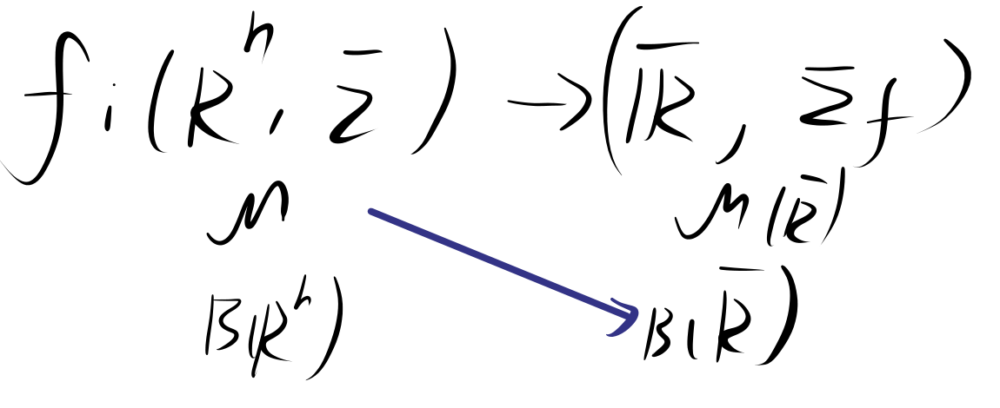

实分析 9：复习笔记
目录
- 、
与 Borel 集：定义与基本例子；无理数集不是
；度量空间中的开闭集表示。
- 1.1 Borel 集与 Lebesgue 可测集：Borel
集族的基数；Cantor 零测集中的非 Borel 子集；Carathéodory
可测集族严格大于 Borel 族；边界分解。
- 开集外逼近与闭集内逼近：有限测度证明；无限测度的局部分解；取补得到内逼近。
- 2.1 相差零测集的 Borel
外壳与内核：
外壳、
内核及可测性逆向判别。
- 2.2
由开、闭集确定测度：外正则、闭集内正则与有界集的内外测度判据。
- 2.3 边界零测的充分条件。
- 积分引入与逆像族：分层草式；拓扑基判别；逆像的交并补恒等式；
代数及最大目标拓扑。
- 可测映射与生成族判别：两端可测空间；生成族判别的必要性、充分性。
- 扩展实数与迹
代数。
- 5.1 序拓扑：开区间、端点半直线、邻域与子基。
- 5.2 Borel 代数：端点单点集；从
到
；四种半直线；与
的同胚。
- 5.3
限制（迹）
代数：任意定义域上的构造及可测定义域的简化。
- Lebesgue
可测函数：上水平集定义；；Borel
逆像判别；原图中源、目标集合族的选择。
- 四种可测性的比较与反例：完整强弱关系；中间条件互不蕴含；有限区间不能区分正负无穷。
- 可测函数的基本例子。
- 8.1 常函数：包括正负无穷常值。
- 8.2 示性函数：水平集端点及可测性充要条件。
- 8.3 连续函数：孤立点辨析与水平集直接证明。
- 8.4
连续蕴含可测的第二条路线：相对拓扑、逆像族包含、生成
Borel 代数。
- 原件终页说明。
编排说明
普通正文保留原稿内容；蓝色信息块分别标明补充解释、补充证明或纠错。原稿明确待填的位置用红色文字保存。中性编号表示尚待判读的字迹，不表示数学练习。原稿页序另见保真转写；这里把基础工具与相应证明排在一起，并保留重复表述、不同路线、旁注及原图。
1.
集、
集与 Borel 集
Def. 若存在一列开集
及闭集列
，使得（拓扑下）：
称
为
集，
为
集。
这是表示法。
- 开集是
，闭集是
。
-
是
，
是
。
- 。单点是
与
。
补充证明：定义中的基本例子
若
开，则
；若
闭，则
。在度量空间中，单点闭且
。把
枚举为
，便有
，从而其补集为
。单点的球交表示用到了度量，不能据此断言任意拓扑空间中的单点均为
。
-
不一定是
。〔“不一定”按上下文恢复〕
【例子与证明补全】无理数集是
，却不是
已知
是
，故
是
。假设反过来它也是
，写成
，其中各
在
中闭。由于
不含有理数，而每个非空开区间都含有理数，
的内部为空。把有理数列成
，并交错排列闭集
、。这些
都闭且内部为空，却覆盖了
。
以下直接证明这不可能，无需先引用 Baire 定理。取非退化闭区间
。若
已选定，
内部为空且闭，所以
是非空开集，可在其中选非退化闭区间
，并使其长度小于
。于是
、。由实数闭区间套性质，
有一点
；对每个
，，所以
，与全部
覆盖
矛盾。因此无理数集不是
。
- 开集是否是
？闭集是否是
？
右侧旁注：“会有〔疑字 001〕有反例”。
一般距离空间中成立。
设
，令
“开”
“开”。〔箭头表示以距离函数取逆像。〕
补充证明：度量空间中的闭集是
此处
必须为闭集。先设
。三角不等式给出
所以距离函数连续。
是
的相对开集，因此
开。又
对每个
成立；若
，闭性给出
使
，选
，便有
。于是
。
时直接取
。对闭集取补，得到每个开集都是
。
原页写“设
”，未重写闭性；此处补明它来自上文“闭是否是
”这一问题。
Prop.
、
均为 Borel 集。
补充证明：Borel 性
Borel
代数含开集，也含开集的补集即闭集，并对可数并、可数交封闭，因此含全部
和
集。
Prop.
1.1 Borel 集与 Lebesgue
可测集的严格区别
包含开集的最小
代数是 Borel 代数。
下界：单点集。〔该行左侧有勾。〕
上界：Borel 层级，用超限归纳。
补充证明：
下界来自互不相同的单点 Borel
集：
给出
到 Borel 集族的单射。
上界按原稿提示采用 Borel
层级。
有可数基，每个开集都是基元素的某个子族之并，所以开集族的基数不超过
。从开集出发，在每个可数序数阶段加入以前各阶段集合的补集和可数并。若已有集合族基数至多
，其可数序列族基数至多
；可数极限阶段的并也至多为
。超限归纳得每个可数阶段至多有
个集合。全部可数阶段的并对补集和可数并封闭，因为可数个可数序数的上确界仍可数，因此它正是
Borel
代数。又
，全部阶段的集合数仍不超过
，与下界合并即得等式。
Cantor 集也是 Borel
集，，但
。
反证法：
矛盾。
补充证明：严格包含
取标准三分 Cantor 集
。它闭、测度为零，且
。若它的每个子集均为
Borel 集，就有
；但
Cantor 定理给出
，矛盾。因此有非
Borel 子集
。Lebesgue
测度完备，故这个
仍然 Lebesgue 可测且测度为零，于是
。在
中使用
得到相同结论。
不存在外测度
，s.t.
由 Carathéodory 条件生成 Borel 代数。
【完整补证】Borel 代数不能恰为外测度的 Carathéodory
可测集族
原断言在
、
时成立。下面先列所需的两个描述集合论工具，再证明原稿省略的全称结论。
工具一：解析集的普遍可测性。 Polish
空间（可分且可完全度量的拓扑空间）的解析集，可理解为 Polish
空间的连续像；每个解析集对任一有限 Borel 测度都属于其完备化。具体地，若
解析、
是有限 Borel 测度，则有 Borel 集
，满足
。参见
Philipp Schlicht，《Lecture
Notes on Descriptive Set Theory》，2013 年，Proposition 3.26，PDF 第
16 页及其前面的 Lemmas 3.22–3.25。
工具二：存在解析非 Borel 集。 Justin Moore 的 《MATH
7870: Descriptive Set Theory》，Lecture 6，Theorem 13 与 Corollary
5（PDF 第 14 页）给出 Baire 空间乘积中的普遍解析非 Borel
集。交错排列坐标把该乘积同胚到 Baire 空间，再用 Baire
空间与无理数集的同胚（同讲义 Lecture 2，第 4 页），可将它作为
中的解析非 Borel 集；若其像在
中是 Borel 集，连续逆像将迫使原集 Borel，矛盾。嵌入坐标直线可得到
中的例子。
现在设任意外测度
的 Carathéodory 可测集族包含
，取一个解析非
Borel 集
。任取测试集
，证明
若
，外测度次可加性已给出
，所以右边也是无穷，等式成立。
若
，对
Borel 集
定义
。这里
不必可测。证明
是有限 Borel 测度：对两两不交的 Borel 集
，把各
的 Carathéodory 分割性质逐次用于
，得到对每个
，
令
得到不小于整个级数；反向不等式由外测度可列次可加性给出。因此
可列可加，且
。
应用工具一，选 Borel 集
使
。有限测度的可加性给出
，由单调性夹逼，
同样
且
，所以
两式相加为
。因为
任意，
满足 Carathéodory 条件；但
非 Borel，故该可测集族严格包含
，不可能恰好等于它。
这个论证不假设原外测度局部有限或
有限，也没有使用无穷量相减。
可以理解：
术语澄清：这里的 Borel 测度
把 Lebesgue 测度
限制在
上，所得
的定义域是 Borel
代数，且继承可列可加性，所以是一种 Borel 测度。一般说“Borel
测度”只说明测度定义在 Borel 集上，并不唯一指定 Lebesgue
测度。此处按原稿的限制式理解。
Borel 集上，
Prop.
补充证明：只需检查边界上的部分
对任意
，，两部分不交。由于
开、
闭，二者都是 Borel 集。若
可测，则
可测；反过来，若
可测，则由分解式及可数并封闭性，
也可测。此处
可取 Lebesgue 可测集族；同一论证也适用于 Borel 集族。
测度的完备化，局部逼近。开集〔疑字 002〕扩大逼近〔疑字 002〕。
Lemma.
，则下述性质成立。〔接第
3 页。〕
2.
可测集的开集外逼近与闭集内逼近
以下条件承接原稿引理：
为 Lebesgue 可测集。
- ，
开集
，s.t.
- ，
闭集
，s.t.
原稿提问：与外测度结论区别？
〔问号用蓝色椭圆圈出，原位置未写答。〕
补充解答：与外测度逼近结论的区别
外测度定义可对任意集合
给出开覆盖，其总体积接近
；有限外测度时可得到
。本引理以
可测 为条件，结论直接控制新增部分
的测度。有限测度时，依靠可测性写成
；无限测度时不能作
的减法，需要下面的局部分解与可求和误差。闭集内逼近则由补集的外逼近得到。
(1) 当
。
，，s.t.
补充证明：有限测度情形的最后一步
在此表示所用的可数开矩形（开区间）覆盖族；由原稿下一行
为开集可见，覆盖元素在本路线中取开。
且
可测，故
。这里
，从而
时。
令
是
有限，再用
。〔此处原稿指数写
，下文片段指标写
。〕
右侧短注：，。
即可。
补充证明：可求和的局部误差
因为
，对每个
应用有限测度结论，选开集
，使
这里把原稿的占位指标
统一成对应片段的
。
为包含
的开集。原稿给出的集合包含关系与次可加性推出
最后的严格小于成立：每一项的缺口均为正，至少第一项已有严格缺口，而其余项以给定上界估计即可。
(2)
。
由 (1)
得，，
开集
，s.t.
〔接第 4 页。〕
补充证明：闭集内逼近的跨页收尾
延续上页对
的外逼近，令
。则
闭且
，并且
所以
，完成闭集内逼近。原稿在上页写到对
的估计后，本页直接进入下述推论；这里补出省略的取补步骤。
2.1 相差零测集的 Borel
外壳与内核
。
- 存在
集，s.t.
且
- 存在
集，……
〔这里原稿确写
，条件处用省略线，并重复上一项的
。〕
纠错：第二项应为
内核
与闭集内逼近对应的正确结论是：存在
集
，且
。原稿第二项的
和重复写出的
已在上方保留；这里分别订正为
与
。
证明：对每个
，选开集
使
，令
，便有
对每个
成立，所以为零。再选闭集
使
，令
；同理由
得零测。
实际上，在外测度下，
是和上面的引理等价。
也得到一种判定可测集的方法。
补充证明：逼近条件反推可测性
假设对每个
有开集
且
。令
，则
是 Borel 集，且
。零外测度集可测，所以
可测。由闭集形式也可同样取
，使
，再以
得可测。因而原稿的“外测度下等价”应读作把逼近误差写成外测度后的判别。
2.2 由开集、闭集确定测度
Th. (1) 设
，则
- pf：
原稿待填：此证明标记之后未写证明。
〔第 5 页直接转入边界零测与积分话题。〕
补充证明：外正则与闭集内正则
单调性先给出
及
。若
，开、闭逼近分别给出
与
，令
即得到两边等式。若
，任何超集
都有无限测度，故外侧下确界为无限；取闭
使
，可加性迫使
，故内侧上确界也为无限。
-
有界，且
，则
。
补充证明：有界集的内外测度判据
在此使用
的内测度表述。设
。有界性保证
。对每个
取闭集
与开集
，使
、。于是
。令
、，则
且
对每个
成立。因而
，
是 Borel 集
与零测集子集的并，所以可测。
2.3 边界零测的充分条件
补充证明：边界零测的判据
。第一部分开而可测；第二部分包含于零外测度集
，所以也可测。这个条件是充分条件，并非任意可测集的必要条件。
3. 积分引入与逆像族
勒贝格积分
草式：。
。〔
按取样点语境恢复，原形近似
。〕
补充解释：由值域分层引出可测性
这里的
可展开为
。原稿只写了分层集和一个乘积草式，没有写完整积分定义；后面的可测映射理论保证这些分层集能取测度。若在每层选择样点
，相应有限和写成
，其中
是该层原像；这只是解释草式的分片思路。
连续：对
基，基的原像是开集。〔原稿记作“
基”，本页未另作定义。〕
又对交、并、补取等。
补充解释：基判别与逆像恒等式
对通常拓扑，检验拓扑基中每个集合的原像为开集即可检验连续性，因为开集是基元素的并，而逆像保持任意并。原稿的“
基”称谓保持原样；这里仅说明通常拓扑基的结论。
Prop.
-
是
上
拓扑，
是
上
拓扑。
〔第一个底空间位置原写形为
。〕
- 若……
代数，
……
代数。
纠错与补充证明：逆像族继承封闭性质
第一项的底空间按前面的映射定义应为
。原稿“
拓扑”的称谓在正文保留；本页没有重述这个课堂术语的定义。由逆像恒等式，
对哪些并、交封闭，
就对相同类型的并、交封闭，且
的原像分别为
。
第二项的省略句补全为：若
是
上的
代数，则
是
上的
代数。具体地，；
时，；
时，。三条公理逐项成立。
设
。
-
是
上
拓扑。
-
是 s.t.
连续的最大拓扑。
补充证明：使映射连续的最大目标拓扑
这一段取
。由于
对任意并、有限交封闭，
实际上是通常意义的拓扑。按它的定义，
连续。若
是
上另一个使
连续的拓扑，则每个
都满足
，所以
，即
。这证明“最大”的方向。
4. 可测映射与生成族判别
可测
定义
。
若
，有
，则
是
可测映射。
【条件补充】此处的可测空间
、
均取相应底集上的
代数。可测性由两端的集合族共同决定；同一个点映射改变目标
代数后，可测性的要求也会改变。沿用前页记号
，可测性等价于
。
引理 若存在
，使
，
则
是
可测
。
仅证
。
是〔疑字003〕
代数。
。〔右侧有证明结束小记号。〕
【证明补全】生成族判别的两个方向
必要性：若
可测，则
，所以
。
充分性：假设
。前页已逐项证明：逆像保持全集、补和可列并，因此
是
上的
代数。由生成
代数的最小性，，这正是
可测。
变动，有不同的……〔原行止于“的”。〕
5. 扩展实数与迹
代数
5.1 广义
上的拓扑
（1）定义开区间。
（2）半直线。
只要邻域，〔疑字004〕（1）（2）线序拓扑。
【定义补全】扩展实数及其序拓扑
记
，按
（）排序。原稿列“开区间”“半直线”两种说明方式，可具体写成以下拓扑基：有限端点的
，以及包含端点的
、，其中
、。任意并组成序拓扑。
等价地，取两类开半直线
和
为子基；它们的有限交给出上述基区间。这些基覆盖全空间，两个基区间交集中每一点仍有更小基区间，故确实确定拓扑。有限点的邻域含某个
；
的邻域含某个
；
的邻域含某个
。
5.2 扩展实数的 Borel 代数
可以证明
、
是闭集，
则
，。
【证明补全】单点集
对有限
，其补集为
，是开集。
的补集
开；
的补集
开。因此每个单点闭，故为 Borel 集。
令由开集生成的
代数。
（1）。
〔原稿等号后留空，待填。〕
。
Borel 集
，扩充了。
【记号澄清与待填补全】扩展实数上的 Borel 集
本段对象是
的序拓扑；首式的
未画上横线，右侧
是简记。严格写法为
证明：右侧集合族是
上的
代数。任意开集
的
在
中开，所以
属于右侧，得到左侧包含于右侧。反过来，
是
中的开子空间，且其每个开集在
中也开；因而普通 Borel 集作为扩展实数的子集仍为
Borel。两个无穷端点的单点集闭，加入它们仍为
Borel，得到反向包含。以上第二个等号给出原稿空白处的一种完整续写，属于补充而非识读。
（2）。
＝四种广义半直线，在广义
上。
【证明补全】四种半直线各自都生成同一个 Borel
代数
四族分别为
、、、（）。每个成员都是开集或闭集，因此各族生成的
代数都包含于
。
以原稿的
为起点，利用
得到所有基区间。该序拓扑有可数基：有限端点可取有理数，连同两个方向的有理端点半直线；因此每个开集是这些基区间的可列并，属于所生成的
代数。
其余三族都能反过来得到原族：；由
直接取补得到
；由
取补得到
，再用刚才的交式。故四者等价。端点没有遗漏：，。
与
同胚。
【证明补全】一个具体同胚
对有限
，令
，并令
、。这是严格递增双射。有限点处
及逆映射
连续；当
或
时，
或
。按前页的端点邻域定义，
在端点连续，逆映射在
也连续，故为同胚。
5.3 限制
代数
，
是 Lebesgue
。
。
称 trace
代数。
特别的，若
可测，则
。
【定义与证明补全】限制（迹）
代数
指
上的 Lebesgue 可测集族。任意
都可定义
，无需先假设
可测。它是以
为底空间的
代数：
属于其中；若
，则其相对补
仍在其中；若
，则
也在其中。
若进一步
，则每个
都是环境中的 Lebesgue 可测集且包含于
；反过来，若
、，则
。这证明原稿最后的等式。
6. Lebesgue 可测函数与 Borel
逆像判别
，则
。
【条件补充】承接上页的
本页开头仍以
Lebesgue 可测为前提。若
，前页已经证明
，故上述等价成立。若去掉
，则
总成立而
本身可能不可测，等价式便不能保留。
定义
，称
可测：
，有
。
上所有 Lebesgue 可测函数集合为
。
Th 设
，则
。〔原稿先如此起笔，下一行另起
“Th”。〕
【表述补足】重复起笔不能单独当作定理
仅有
并不能推出任意
可测。上行保留的是原稿未写出判别条件的第一次起笔；紧随其后的重述才给出完整等价条件。
Th
。令
。〔首符号字形近
，本行后续及以下均记为
。〕
则
。
显然。
用生成〔疑字005〕。
。
。
【端点纠正与证明补全】扩展实数的上射线包含
为对应
，这里必须使用
。原稿右括号写成圆括号，黑色转写保留；学习时以含
的版本为准。
若
，则每个
的逆像属于
；由
可测，逆像也是环境中的 Lebesgue 可测集，故
。反过来，若
可测，则
；
是
代数，而前页证明了
，故得到所需包含。
若真把
取为不含无穷端点的
，其每个成员都同时排除
，经补和可列并之后仍不能把这两个点分开。因此它不能生成
；下一页的正负无穷反例正显示这个缺口。
。
原图下方左列为
、，右列为
、。蓝色斜箭头从左上
指向右下
。

原稿的源端与目标端集合族示意及蓝色箭头
。
【条件澄清】图中的蓝箭头与旁边的较强包含链
蓝箭头对应通常的 Lebesgue 可测：源端用 Lebesgue
代数，目标端用 Borel
代数。若另外要求目标端所有 Lebesgue 可测集的逆像也可测，就是更强的
可测性；原稿右边的完整包含链应在这个更强条件下理解，不能由
自动推出。这里可约定
。
改变源端、目标端的集合族是两件不同的事：源端可测集增多会放宽要求；目标端可测集增多会加强要求。下一页“比较四个组合”的原题将逐一落实这些关系。
7.
四种可测性的强弱与无穷端点反例
，Leb。
。
请比较 4 个组合的可测的强弱。
【练习解答】四个组合的完整比较
以
为例，箭头左侧指定源端
代数，右侧指定目标端
代数。分别记条件为
、、、；例如
要求每个目标 Lebesgue 可测集的逆像都是源端 Borel 集，而
就是本讲定义的 Lebesgue 可测。
|
全部 Lebesgue 可测集 |
Borel 代数 |
|
全部 Borel 集 |
Borel 代数 |
|
全部 Lebesgue 可测集 |
Lebesgue 代数 |
|
全部 Borel 集 |
Lebesgue 代数 |
由
逐项可得
第一条链先减少要检验的目标集合，再放宽逆像所属的集合族；第二条链先放宽源端要求，再减少目标检验集。中间的
与
一般互不蕴含。以下在
给出反例，证明图中每条箭头都不能一般反向使用。
不推出
。
取第 1.1 节已经构造的 Lebesgue 可测但非 Borel 集
，令
。任意目标集合的逆像只可能是
，所以
满足
；但
不是 Borel，故不满足
。
不推出
。
在
用下列 floor
公式取二进制数位；对有两种展开的二进制有理数选终止型：，定义
；在
令
。各部分和
是 Borel 阶梯函数，且在
上单调增加到
；于是对有限
，
是
Borel，故按生成族判别，
满足
。其在
上的像包含于零测 Cantor 集
，并且是单射：若两数字列首次在第
位不同，相应三进制和的差的绝对值至少
。
取一个 Lebesgue 不可测集
（本页原例也以不可测集的存在为前提）。
是目标端的 Lebesgue 可测零测集，但由单射性及区间外值为
，
不可测。因此
不满足
。这个例子也说明前页的
不能仅从通常的 Lebesgue 可测性推出。
即使两个中间条件同时成立，也未必得到最强条件。
恒等映射
同时满足
和
；取
Lebesgue 可测非 Borel 集
，其逆像仍为
，所以恒等映射不满足
。
，，
。
，。
【生成族纠正与证明】有限区间无法分开两个无穷端点
这里
指有限端点区间族，可取
。原稿表达式只列出了“加上两个无穷端点”的形式；完整集合族还应包含不加端点的
Borel 集：
证明：右侧是
上的
代数且含
，所以左侧包含于右侧。反过来，
属于左侧；有限开区间可用半开区间作可列并，再由有理端点可数基得到全部
上开集。因此左侧含全部普通 Borel 集，以及它们在
中的补集，从而含右侧。
此族中的集合要么同时包含
，要么同时不含，不能得到某一个无穷端点的单点集，所以严格小于
。检验所有有限区间的逆像，尚不足以检验扩展实值函数可测。
例
是
上不可测集。
令
。
。
，不可测。
【记号澄清与例题补全】保留原分层反例
此例函数的定义域是整个
，
专指其中的不可测集合。原稿仍沿用
作水平集符号，并以
简写“函数值属于这两个点”；严格的集合写法为
但对每个有限
，。故所有有限区间逆像及整个无穷值部分都可测，函数仍不可测。真正缺少的是分别控制
与
。
若额外知道函数只取有限实值，则有限区间的检验足够：对每个
，
可写成可列个
的并（），由可列并封闭性可测。该论证在允许
时会漏掉它的逆像。
8. 可测函数的基本例子
8.1 常函数
例
，
可测。
【例题证明】常函数
对任意常数
与有限阈值
，
在
时等于
，其余情形等于
，二者均可测。因此有限常值及正负无穷常值函数都属于
。
8.2 示性函数
，。
iff
。
proof 原稿把
分成以下三段：
，。
，。
，。
【端点纠正与证明补全】示性函数的正确三段
此处
。原稿第二段只写了
，第三段为
，既漏掉
，又使第二、三段重叠。正确分段为
若
，这三种集合全可测，所以
可测。反过来，若
可测，取
，得到
。定义域中的“”始终指
。
8.3 连续
孤立点本无法定义连续。
【概念辨析】孤立点与连续性
按本段后续使用的相对拓扑连续性，函数在定义域的每个孤立点处自动连续。若
孤立，可取
使
；给定任意
，取
，那么
且
时只有
，于是
。
若课程在孤立点不定义“去心极限”，原旁注可以理解为那个极限定义不适用；不能据此否定拓扑或上述
–
意义下的连续性。本稿保留原句，同时按相对拓扑解释后面的连续函数定理。
，在
上连续，，
则
。〔原稿在
前另有
形符号。〕
【记号澄清与直接证明】连续函数可测
结合命题条件与后续证明，结论是
；原稿前置的
形符号未定义为数或函数，不能据此理解为一个新的乘积
。
直接从水平集证明：任意有限
，连续性使
在
的相对拓扑中开，故存在
中开集
，使其等于
。由于
可测、
为 Borel 集，这个交集可测，因此
可测。此证明并不要求
在环境中开。原稿另用
与
给出的生成族路线在下一页继续，仍单独保留。
。
。
8.4
连续蕴含可测：第二条证明路线
连续
。
〔原稿下标写作
，中间为斜线状分隔笔画。〕
纠错：区分定义域拓扑与值域拓扑
延续前页
、
的条件，令
为定义域的相对拓扑，
为值域的通常拓扑，并令
此时连续性的正确判据是
。左边必须是值域
的拓扑。若原稿
意在表示
上的相对拓扑，它就不能放在这个包含式的左侧：
的元素是
的子集，而
的元素是
的子集。原稿没有解释该下标，故保留原写法，并用上面的明确定义完成论证。
只证
。
原稿待证：此句之后未写推导；下一物理页为空白。
补充证明：沿原稿的拓扑包含路线逐步完成
第一步，定义域的相对开集可测。 任取
，有开集
使
。开集是
Borel 集，从而 Lebesgue
可测；
也可测，所以
且
。由前述迹
代数的表达式，。因此
。
第二步，证明原稿留下的包含式。 任取
，由定义
，再由第一步
，故
。这就证明了
。此步只使用定义域的可测性，无须先假定
连续。
第三步，使用连续性。 对每个值域开集
，连续性给出
，即
。与第二步合并，得
。
第四步，从开集推进到 Borel 集。 前文已证明
是
上的
代数；它包含所有开集，故按生成
代数的最小性，。于是每个
Borel 集
的原像
都在
中。
第五步，回到本课的水平集定义。 对任意有限实数
，
是
中的 Borel 集，故
。因此
。这是原稿所提示的“拓扑包含—生成
代数”路线；前页直接验证水平集的路线也完整保留。
9. 原件终页说明
〔物理第 12 页为空白页。上一节已保留第 11
页的最后两行及其补充证明。〕